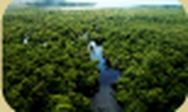
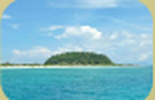
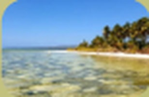
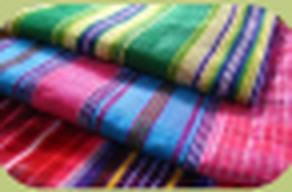

Galeri Wakatobi
Enam destinasi yang tersedia di Wakaloka, dan produk UMKM yang bisa dibeli bersama tiket.
Destinasi wisata






Produk UMKM

Enam destinasi yang tersedia di Wakaloka, dan produk UMKM yang bisa dibeli bersama tiket.



